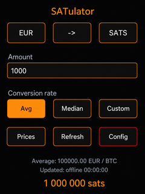

Features
Rates that remain useful offline

Main controls
The top row changes the active fiat currency, conversion direction, and Bitcoin unit. Enter an amount, then choose Avg for the mean of valid sources, Median for their median, or Custom for a rate entered by hand. The result is shown at the bottom.
Price sources and rates
SATulator supports EUR, USD, CHF, GBP, and JPY. It obtains rates from configurable public source lists and makes average, median, and editable custom rates available for calculation.
Prices opens the saved rate table. Refresh downloads the active currency again. Configuration offers Refresh all, erase saved rates, forget Wi-Fi credentials, and restart.
Stored settings
The active fiat, conversion direction, bitcoin/satoshi unit, rate choice, custom rate, and entered amount are persisted in flash. Downloaded prices are persisted too, so the Prices page can work without a connection. A currency without a saved download is shown as 0.00.
Time and diagnostics
When Wi-Fi is available, NTP supplies refresh timestamps. The Configuration page also reports rate payload, board-state payload, and cumulative saved-data statistics.